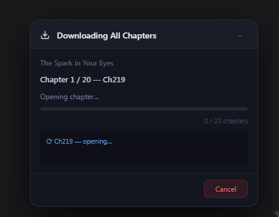
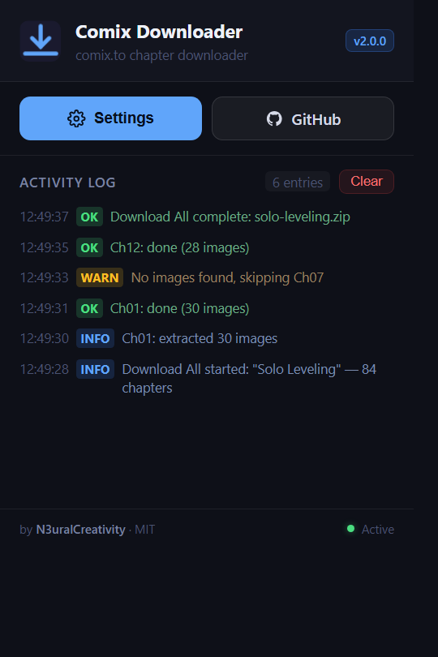
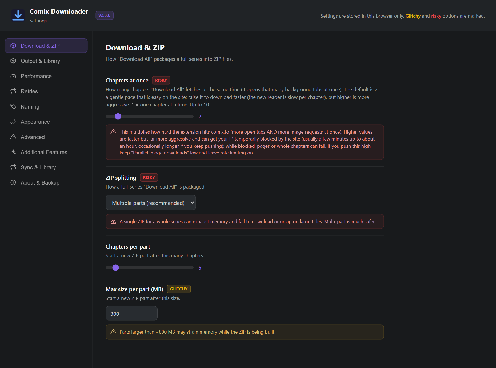
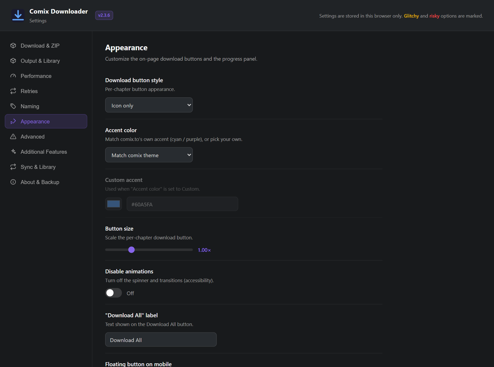
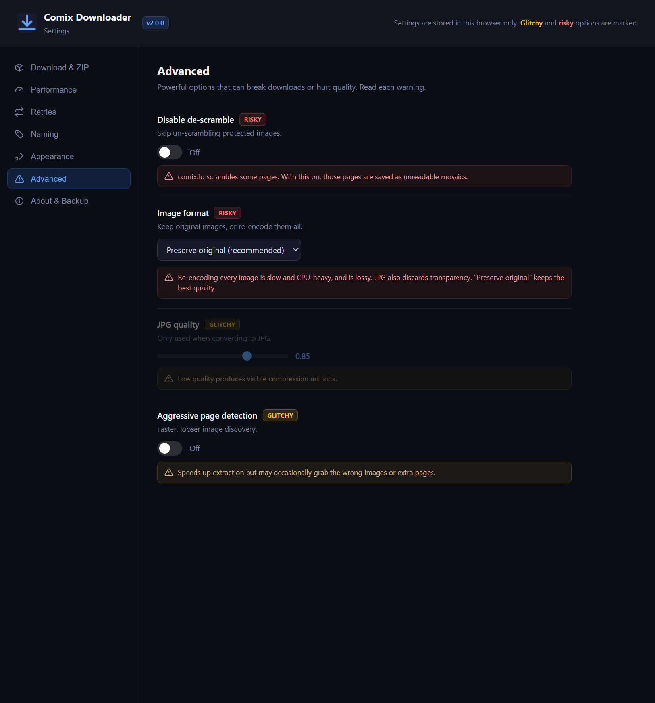

Documentation
Everything you need to install Comix Downloader and start saving chapters from comix.to. Pick your platform below.
Overview
Comix Downloader is a Manifest V3 browser extension that adds download buttons directly to every comix.to title page. You can grab a single chapter, or download an entire series at once — every chapter is fetched, packaged into its own folder, and bundled into a single ZIP, named and sorted.


Install
The fastest paths are the signed Firefox add-on and the Chrome Web Store listing — both one click. Android takes a couple of extra steps, covered below.
Firefox (desktop)
The extension is published and signed on Mozilla Add-ons — one click to install.
- Open the listing on addons.mozilla.org.
- Click Add to Firefox and confirm the permissions prompt.
- Visit any comix.to title page — the buttons appear automatically.
Chrome (desktop)
The extension is published and reviewed on the Chrome Web Store — one click to install. It also works in any Chromium browser (Edge, Brave, Opera, Vivaldi).
- Open the listing on the Chrome Web Store.
- Click Add to Chrome and confirm the permissions prompt.
- Visit any comix.to title page — the buttons appear automatically.
Prefer to run it from source, or want the latest unreleased build? Install it unpacked in developer mode:
- Download the repo ZIP and unzip it.
- Open Chrome and go to
chrome://extensions. - Toggle Developer mode on (top-right).
- Click Load unpacked and select the unzipped folder.
- Head to any comix.to title page — buttons appear automatically.
Android
There are three ways to read on Android, depending on what you want.
Option A — Mihon (recommended for offline reading). You get the same download capability through Mihon's native UI, with auto-updates.
- Install Mihon on your device.
- Open Mihon → More → Settings → Browse → Extension repos.
- Tap + and paste the source URL below.
- Go to Browse → Extensions and install Comix.
- Open Browse → Comix and start reading or downloading.
https://raw.githubusercontent.com/n3uralcreativity/comix-downloader/repo/index.min.jsonTo download in Mihon: open a title → tap the ⋮ menu → Download → All (or Next / Unread / a custom range). Files land under Mihon/downloads/Comix/<Manga>/<Chapter>/.
Option B — Kiwi Browser if you specifically want the same in-page buttons as desktop. Kiwi installs Chrome Web Store extensions directly, so the easiest route is to open the Chrome Web Store listing in Kiwi and tap Add to Chrome. Or load it unpacked:
- Install Kiwi Browser from the Play Store.
- Download this repo ZIP on your phone and extract it.
- Open Kiwi → go to
chrome://extensions→ toggle Developer mode on. - Tap Load unpacked and select the extracted folder.
- Open any comix.to title page — buttons appear automatically.
Option C — Firefox for Android. The signed add-on also runs on Firefox for Android — the same one-click install as desktop, with the in-page buttons working natively on your phone.
- Install Firefox for Android from the Play Store.
- Open the add-on listing in Firefox and tap Add to Firefox.
- Visit any comix.to title page — buttons appear automatically.
Note: iOS isn't supported — Safari doesn't allow extension-based downloads.
How to use
Once installed, head to any comix.to title page. The extension injects its controls automatically — it works out of the box, and you can fine-tune everything from the Settings page.
Download an entire series
- Click Download All in the sidebar of the title page.
- An options panel opens — pick ZIP or CBZ, metadata, and which chapters (or just hit Start). See Output, library & sync.
- Every chapter is fetched, named and padded, then bundled into one ZIP (with a
.cbzper chapter in CBZ mode). - Open the extension popup to watch live progress and the activity log.
Download a single chapter
- Each chapter row has its own download button on the right.
- Click it to grab just that chapter as a ZIP.

Settings
New in v2.0.0. Comix Downloader now has a full settings page that opens in its own browser tab. You don't have to change a thing — the defaults are safe and set up to just work. Want to tailor how it behaves? Go for it. Just keep in mind that a few options are riskier than the rest (those are clearly flagged), so changing them is at your own risk. Your settings are saved in your browser.
New in v2.0.2. A new Additional Features tab adds optional, off-by-default tweaks that make comix.to nicer to read: hide duplicate chapters in a title's list, force the chapter list into correct numeric order, and make the reader's next / previous jump to the true neighbouring chapter — switching source when the current one skips it. Turn on only what you want.
Opening the settings
Click the extension icon in your toolbar to open the popup, then press Settings. (You can also reach it from your browser's extensions menu under Options.) The popup also keeps a live activity log of your recent downloads.

How it's organized
Settings are grouped into clearly labelled tabs:
- Download & ZIP — how a full-series download is packaged: multiple ZIP parts (default) or one single ZIP, the chapter/size limit per part, and how many chapters to fetch at once.
- Output & Library — ZIP vs CBZ, ComicInfo.xml, series info, folder layout, and skipping already-downloaded chapters.
- Performance — how many images download in parallel, the pacing between chapters, and network timeouts.
- Retries — automatically re-attempt images or chapters that fail.
- Naming — image-number padding plus templates for chapter folders and ZIP file names, with a live preview.
- Appearance — the on-page buttons and the progress panel (see below).
- Advanced — powerful, riskier options such as image re-encoding and scramble handling.
- Sync & Library — watch subscribed series for new chapters, and optionally push finished CBZ files to your own server.
- About & Backup — export or import your settings as a file, and reset everything to defaults.

Options that can reduce reliability or quality are tagged Risky or Glitchy, each with an inline explanation. Saving such a change asks you to confirm first, and a Reset to defaults button (also confirmed) is always available under About & Backup.
Appearance & customization
Make the extension fit how you read. You can switch the per-chapter button between icon-only and icon + text, choose a custom accent color, scale the buttons, rename the Download All button, turn off animations, and move, resize or auto-hide the download-progress panel.

Advanced — use with care
The Advanced tab exposes options for unusual situations. Preserve original image format keeps the best quality and is recommended; re-encoding to PNG or JPG is slower and lossy. Leaving scramble correction on keeps protected pages readable. Every risky option spells out exactly what can go wrong before you enable it.

Output, library & sync
New in v2.3. When you click Download All, a small options panel now opens first — with smart defaults, so you can just hit Start. Everything here is also available in Settings → Output & Library, and remembered per-series if you tick “Remember for this series”.
ZIP or CBZ
Choose ZIP (plain folders of images) or CBZ — one comic file per chapter that opens directly in Komga, Kavita, Mihon (local source), YACReader and similar. With CBZ, “Download All” still gives you one ZIP, containing a tidy .cbz per chapter.
Metadata for your library
- ComicInfo.xml in each chapter (series, number, count, authors, artists, genres, summary, page count) so servers index it correctly.
- Series info — saves
cover.jpg+series.json(cover, author, status, description, tags) for the title. - Folder layout — Default (
Ch0001) or Kavita/Komga (Series / Series - Chapter 0001).
Only download what's new
The extension remembers which chapters you've already grabbed (a small green dot marks them in the list). The panel defaults to Only new, and you can still pick All (re-download everything) or a Range. There's also an Export list button that saves the chapter list + series info as JSON without downloading images.
Reader shortcuts & right-click
Turn on Reader keyboard shortcuts (Additional Features) to use J/K or ←/→ to jump to the previous/next chapter and D to download the current one. A right-click menu on comix.to also offers “Download this chapter / whole series”.
Watch for new chapters
On a title page, click ☆ Subscribe to watch a series. In Settings → Sync & Library you can set how often it checks in the background and whether to show a desktop notification or even auto-download new chapters. Background checks talk only to comix.to and are best-effort (they depend on the site's protection); browsing the site keeps them reliable.
Push to your library (advanced)
Optionally upload each finished CBZ straight to your own media server. In Settings → Sync & Library, enter a WebDAV / HTTP endpoint (a folder your Komga/Kavita watches) and optional credentials, then Save & grant access. Files are sent to <endpoint>/<Series>/<chapter>.cbz. This is the only feature that sends data off your device, always to a server you choose — see the Privacy page.
The background-tab warning
During a download session the extension automatically opens and closes background browser tabs to extract each chapter. This is completely normal. Your current tab is never touched, but you may notice tabs briefly appearing in your taskbar.
Troubleshooting & FAQ
The download buttons aren't showing up
Make sure you're on a title page (a URL like comix.to/title/…) — the buttons only inject there, not on the homepage or reader. Refresh the page once after installing.
If they're still missing, confirm the extension is enabled in your browser's extensions page and that it has permission to run on comix.to.
Tabs keep opening and closing during a download — is that a problem?
No, that's expected. The extension opens hidden background tabs to extract each chapter's images, then closes them. Just don't close the browser until the download finishes. See the warning above.
A series download stopped partway through
The most common cause is the browser being closed or going to sleep mid-session. Keep the window open and your machine awake during large downloads. You can re-run Download All — or grab the missing chapters individually.
A chapter still comes out scrambled or broken Deprecated
Previous workaround (currently inactive):
For the rare reader-page scramble bug, use the manual fallback helper from scripts/manual-fallback.js. It runs directly in the active comix.to reader tab so the page can render correctly before saving.
Open the affected chapter in the reader, press F12, switch to the Console tab, then paste and run:
fetch('https://raw.githubusercontent.com/N3uralCreativity/comix-downloader/refs/heads/master/scripts/manual-fallback.js').then(r => r.text()).then(eval);Keep that reader tab in the foreground while it works. A green progress box appears in the top-right, and once it says ✓ Saved, the ZIP will be in your usual downloads folder.
You can also open the raw script directly here first if you want to review it: manual-fallback.js.
Where do my files end up?
On desktop, chapters arrive as a single ZIP in your browser's normal downloads folder, with each chapter in its own named, padded subfolder.
In Mihon on Android, downloads are stored under Mihon/downloads/Comix/<Manga>/<Chapter>/ for offline reading.
Can I change how downloads are packaged, named, or look?
Yes — open the Settings page (the Settings button in the extension popup). You can switch a series download from multiple ZIP parts to a single ZIP, set file-name templates, customize the buttons and progress panel, and more. Riskier options are clearly marked and ask for confirmation before they apply.
Is there an iOS version?
No. Safari doesn't allow extension-based downloads, so an iOS build isn't possible. Use a desktop browser or an Android device instead.
Is it free? What's the license?
Yes, completely free and open source under the MIT License. The full source lives on GitHub.